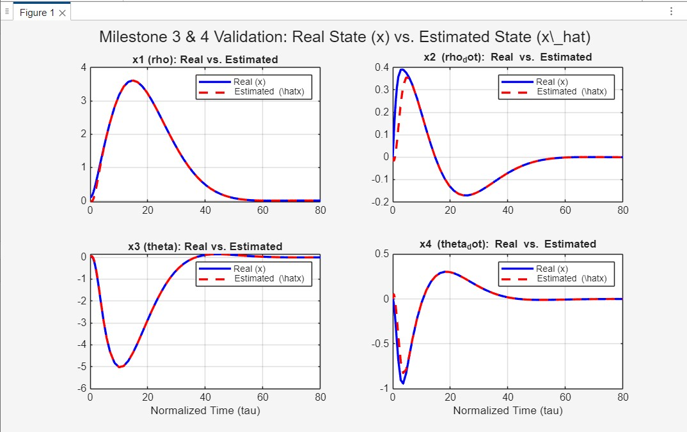
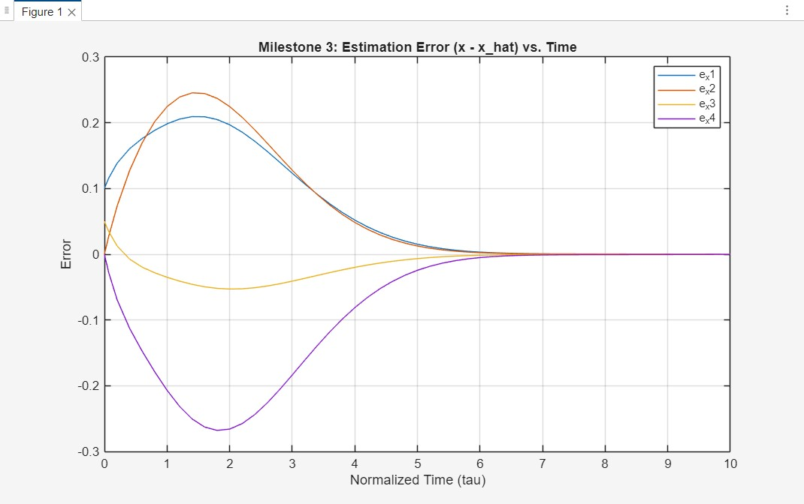
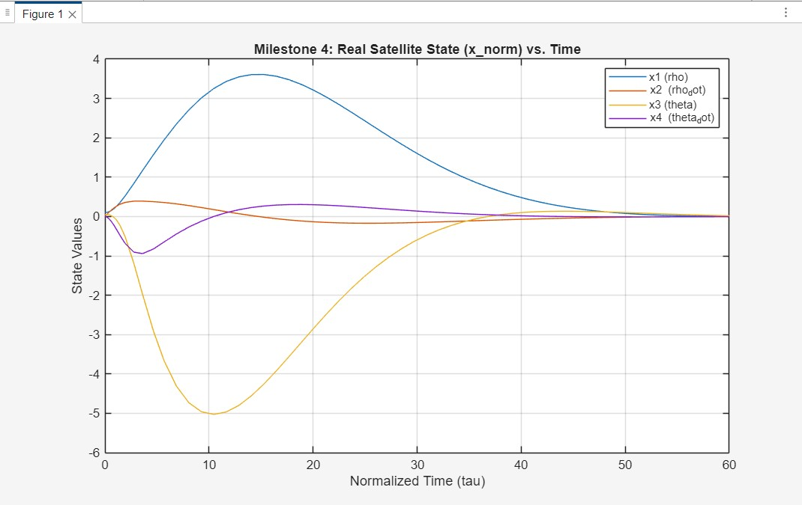
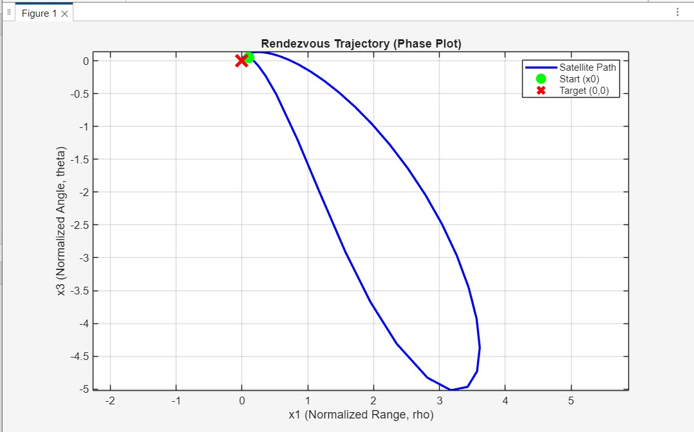
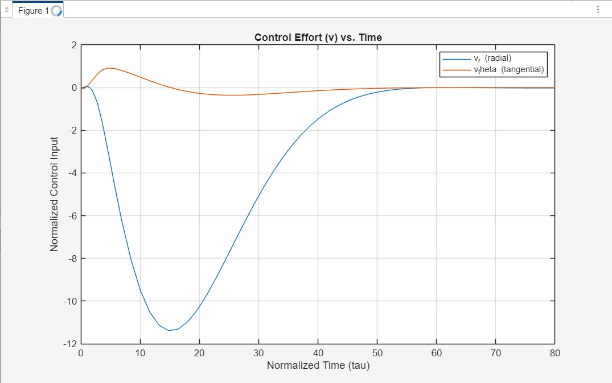

Commande de rendez-vous orbital par observateur de Luenberger, à partir de la seule mesure angulaire
Commande par retour de sortie d’un satellite chasseur utilisant uniquement la mesure de l’angle de ligne de visée. L’état complet est reconstruit à l’aide d’un observateur de Luenberger, puis le système est validé sous MATLAB/Simulink.
Projet académique | Observateur d’état, commande par retour d’état normalisée et simulation orbitale
Télécharger le rapport complet (PDF)Mesure
y = theta
Mesure angulaire uniquement.
Vecteur d'état
4 états
r, r_dot, theta, theta_dot.
Estimateur
Luenberger
Reconstruction de l'état complet.
Outils
MATLAB
Simulation et validation des gains.
Problème d'Ingénierie
Rendez-vous par retour de sortie
Le contrôleur nécessite l’état relatif complet x = [r, r_dot, theta, theta_dot]^T, alors que le seul signal mesuré est l’angle y = theta. L’observateur doit donc estimer la position radiale et la vitesse avant que la commande par retour d’état puisse être appliquée.
Problème de conditionnement numérique
Le modèle exprimé en mètres et en secondes produisait des gains irréalistes, de l’ordre de 10^15. Le modèle a donc été normalisé avant la conception du contrôleur et de l’observateur afin d’obtenir des calculs numériquement stables.
Architecture de commande
Analyse de faisabilité
Vérification de la commandabilité et de l'observabilité à partir de y = theta, prouvant que le problème à détection réduite est mathématiquement soluble.
Conception de gains normalisés
Conception de gains K_norm et L_norm stables après adimensionnement, avec une dynamique d’observateur plus rapide que celle du contrôleur.
Validation de l'observateur
Confirmation de la convergence de l'erreur d'estimation e_x(t) -> 0, montrant que les états estimés suivent fidèlement les états réels.
Validation en boucle fermée
Validation que l'état réel du satellite x(t) converge vers zéro et que la commande se stabilise une fois le rendez-vous accompli.
Résultats de simulation
Ce que confirment les graphiques
Les estimations de l'observateur convergent vers les états réels, l'erreur d'estimation tend vers zéro, les états physiques du satellite convergent vers la cible de rendez-vous et l'effort de commande se stabilise une fois la manœuvre terminée.





Conclusion et prochaines étapes
Résultat
La simulation montre qu’une architecture associant un observateur et un contrôleur peut stabiliser un modèle de mouvement relatif à deux dimensions à partir des seules mesures angulaires. La normalisation a été déterminante pour obtenir une conception numériquement stable et physiquement exploitable.
Extension logique
- Étendre le modèle à une formulation à 13 états et six degrés de liberté (DDL).
- Remplacer l'observateur linéaire par un filtre de Kalman étendu (EKF) ou non parfumé (UKF) pour la fusion des capteurs.
- Contrôler simultanément les forces de translation F et les couples d'attitude tau.